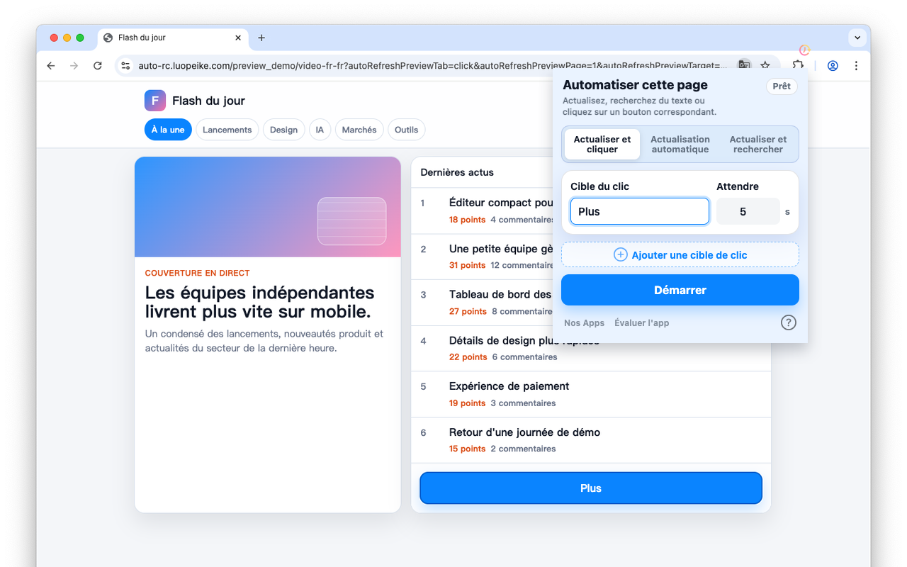

Actualiser les pages à intervalles personnalisés
Définissez un intervalle et gardez vos pages à jour dans le navigateur.
Safari sur iPhone, iPad et Mac · Chrome sur ordinateur
Actualisez les pages selon un intervalle, cliquez les boutons correspondants et trouvez les changements de texte.

Utile pour billets, stocks, prix, commandes et tableaux de bord.
Définissez un intervalle et gardez vos pages à jour dans le navigateur.
Repérez des boutons comme Buy, Next, Submit ou Reserve et cliquez automatiquement.
Utile pour billets, stock, commandes, prix et tableaux de bord.
Les réglages restent dans votre navigateur. Aucun compte web n’est nécessaire.
• Chrome ou Edge sur iPhone et iPad ne peuvent pas installer d'extensions, vous devez utiliser Safari.
• Il existe une version Safari de cette extension. Cherchez “Auto Refresh & Clicker” dans l'App Store, ou trouvez-la ici Auto Refresh & Clicker, payez 2,99 $ pour l'obtenir, vous pourrez ensuite l'utiliser sur vos appareils iOS et macOS.
• En raison des limitations d'iOS, les extensions Safari ne peuvent fonctionner que très peu de temps en arrière-plan.
• Il est recommandé de l'exécuter au premier plan. Vous pouvez configurer l'écran de votre iPhone pour qu'il reste allumé pendant que l'extension est ouverte.
1. Entrez les intervalles de temps et les mots-clés ;
2. Cliquez sur "Start" (Démarrer) ;
3. Si vous voulez "Actualiser & Cliquer" avec d'autres intervalles, cliquez sur "Stop" (Arrêter), puis répétez les étapes 1 et 2.
1. Entrez les intervalles de temps ;
2. Cliquez sur "Start" (Démarrer) ;
3. Si vous voulez "Auto Refresh" avec d'autres intervalles, cliquez sur "Stop" (Arrêter), puis répétez les étapes 1 et 2.
1. Entrez les intervalles de temps et les mots-clés ;
2. Cliquez sur "Start" (Démarrer) ;
3. Si vous voulez "Refresh & Find" avec d'autres intervalles, cliquez sur "Stop" (Arrêter), puis répétez les étapes 1 et 2.